イースの秘密
イースといえば、ディスクドライブ内蔵MSX2の普及に一役買った（かもしれない？）偉大なゲームです。
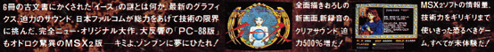
見づらいですが・・・「PC-88版もオドロク驚異のMSX2版」「全面描き下ろしの新画面、新録音のクリアサウンド 迫力500%増だ！」というキャッチコピーでした。新録音・・・？
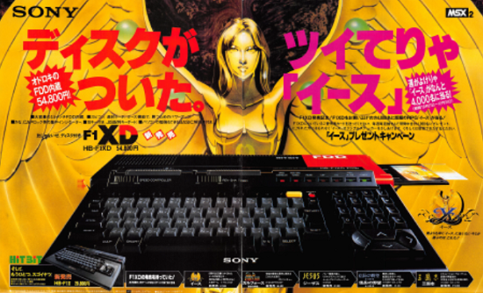
SONYのHB-F1XDの発売が1987年10月21日で、イースの発売が同年12月10日と若干遅いのですが、HB-F1XDの販売促進のために購入者に抽選でイースをプレゼントするキャンペーンが行なわれていました。通常販売されるイースとほぼ同じものですが、非売品バージョンで「HB-F1XD専用」とディスクにも記載されています。試しにFS-A1STで起動してみると、「SONY ONLY!!」と表示されて止まります。
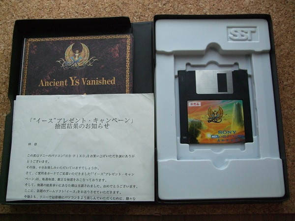
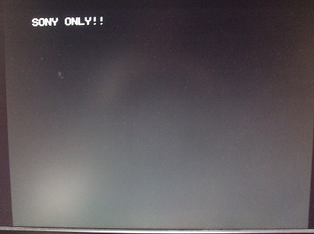
HB-F1XDかどうかをどう判別しているのか・・・と思っていたら、近年、indy@とら様のポストで、SONY製MSXまたはSONY製外付けディスクドライブではゲームが起動し、それ以外では「SONY ONLY!!」と表示されて止まることが報告されました。と言うことは、MSX本体では無くディスクROMをチェックしていることが推察されます。
起動直後に「SONY ONLY!!」と表示しているのでブートセクタを見れば十分そうです。FDをイメージ化してバイナリエディタで見てみると、0076hに「SONY ONLY!!」という文字列が見えるので間違いなさそうです。
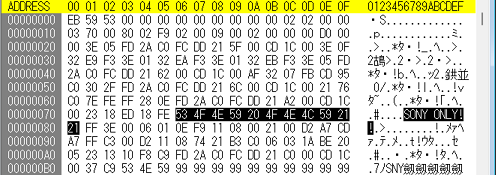
実質的になイースの起動プログラムは0021hから始まっています。実際にはC000hにロードされるのでC021hから始まります。逆アセンブルしてみると、C095h以降で判定が行われていることが分かります。7408h（16kBのディスクROM内では3408h）からの3バイトとC0B3hからの3バイトを比較しています。C0B3hからの3バイトは一番下にある「SNY」という文字列になります。
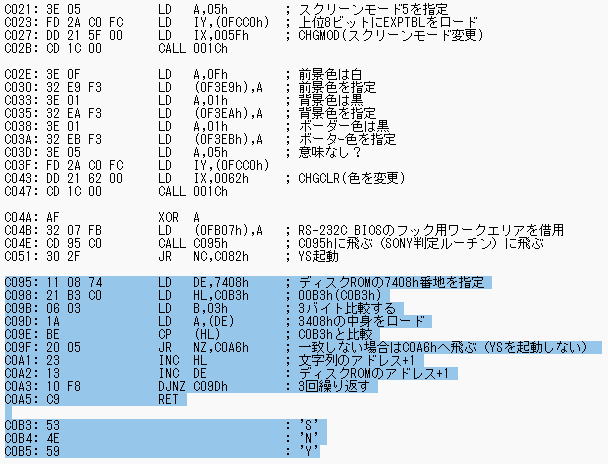
実際にHB-F1XDのディスクROMイメージを覗いてみると、確かに3408hに「SNY」という文字列があります。インターネットに落ちている情報を確認した限りでは、SONY製MSXのディスクROMは外付けディスクドライブ含め同じアドレスに「SNY」という文字列があるようです。
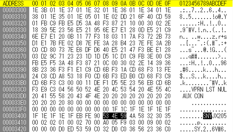
当然ながら？FS-A1STのディスクROMイメージを覗いてみると、3408hに「SNY」という文字列がありません。
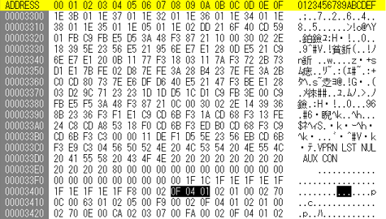
この判定ルーチンをスキップしてしまえば良いのですが、一応、HB-F1XDJとFS-A1STで同じ部分をチェックするようにしてみました。どちらのディスクROMも3400hから1F 1E 1Fとなっているので、チェックするアドレスを7400h、判定する内容も1F 1E 1Fに変えてみます。
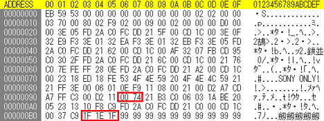
すると、「SONY PRESENTS」と表示され、機種判別をパスして起動することが確認できました。
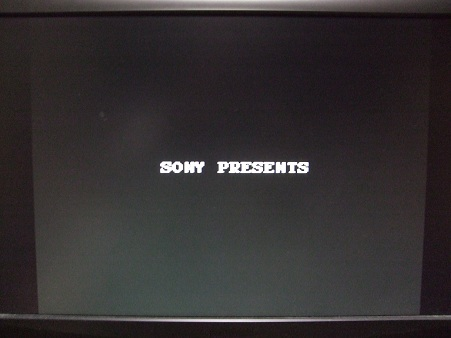
推測通りSONYのMSX本体を判別している訳ではなく、ディスクROMを判別していることが確認できました。
余談・・・イースのマニュアルだとアドルは赤毛の剣士ではない・・・。ゲームでの見た目は赤毛なので、マニュアルを作る時期とゲームの制作時期の差で反映できていなかったのかなと(^-^; イース2のマニュアルでも赤毛の記述はないのですが、イラストは赤毛ですね。イース3のマニュアルには「あざやかな赤い髪」という記述があります。ゲームの中ではイースやイース2でも赤毛と言われているのかもしれませんが未確認・・・。
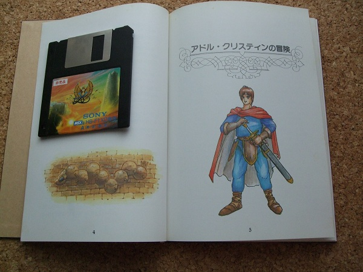
元ネタとして参考にさせて頂いたindy@とら様に感謝致します。
お約束ですが、この噂を見て改造などを行い故障やその他問題が発生しても責任は負えません。各自の責任において情報を広く集めて行うことをおすすめします。